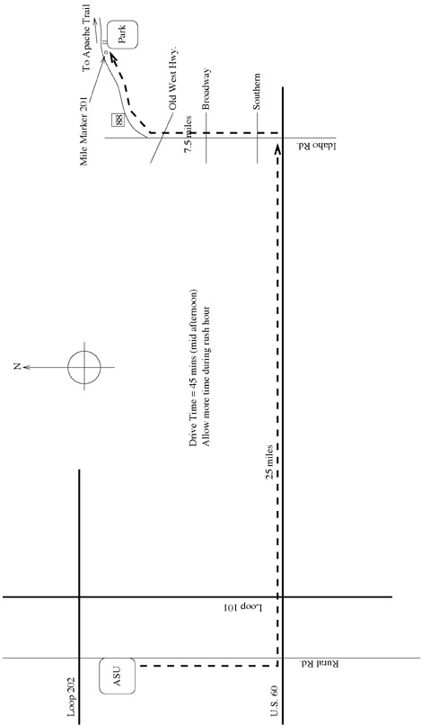
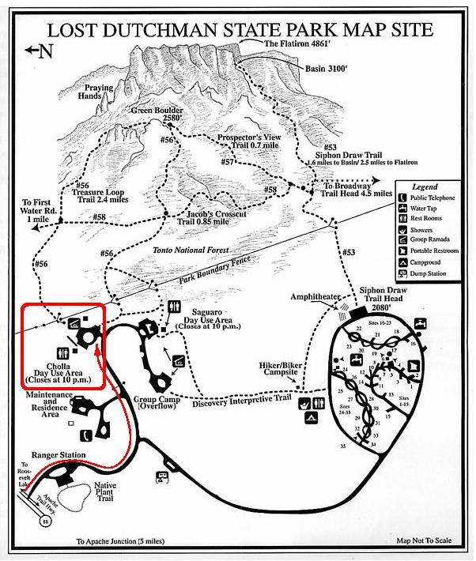

Field Trip to Lost Dutchman State Park
During week 12 we will be conducting the 2nd part of the Light Pollution
lab (Lab #11) out at a dark site - the Lost Dutchman State Park, near Apache
Junction, AZ. There are a variety of rules and issues surrounding this field
trip for students of AST 114. Make sure you read the instructions below
very carefully.
Directions
Use the two maps below to find your way to the Lost Dutchman State Park. The
drive time is about 45 minutes during the middle of the afternoon. During
rush hour it could be MUCH longer. I advise you to leave earlier and eat
dinner in the Apache Junction area. There are numerous places to eat on both
Idaho Rd. and S.R. 88. Please aim to be at the Cholla site in the park
sometime around 7:30pm so we're ready to get started at 8pm.


Instructions
- All students attending the field trip MUST fill out and return (well
before the trip itself) this release form.
- The trip is not being made mandatory, but we strongly encourage students
to attend since the point of the 2-part lab will be lost otherwise. Those
students who choose not to come must complete the indoor lab for that night
and must report to PSH 563 at 8pm to do it.
- Since we have been very unlucky with weather this semester, the drop dead
time for calling bad weather is 4pm. At that time we will be emailing out
notices stating whether the lab is on or not. If the trip to the park is
cancelled, the campus-based make-up lab is also cancelled. To be clear:
if bad weather forces cancellation of the field trip on a given day, ALL
labs are cancelled that day. You will be notified by email, but I will
also place a message on the answering machine on my office line - call
480-965-0938 after 4pm each day to hear whether the lab is on or off.
- Transportation is NOT being provided. Students are encouraged to
carpool to get there but only with students they
know and trust - we don't want any "bad" situations arising because of
this trip. We will be providing driving directions to the site. We will NOT be
driving as a caravan - that introduces specific dangers that we want to
avoid. We will meet at the designated parking area at the park.
- Any person driving a vehicle must have personal auto insurance and
must show evidence of it to all passengers they agree to transport to the
site.
- ALL sections will meet at the designated parking area at 7:30pm, whatever
their regularly scheduled section time is. If there are barricades across
the entrance to the Cholla site parking lot, move them aside and park your
car. If you are asked for a fee to enter the park, tell the ranger that
you're with the ASU Astronomy group and you will be allowed in. Drive
CAREFULLY through the park, people may be camped there for the night.
- Once parked, you will meet up with your TA then and proceed to the area
where the telescopes will be set up to start the lab at 8pm. Do not forget
your flashlight! Because of other campers we need to keep the noise
down when on the site - please be courteous to other park users. We estimate
that all students should be done with their work before 10pm.